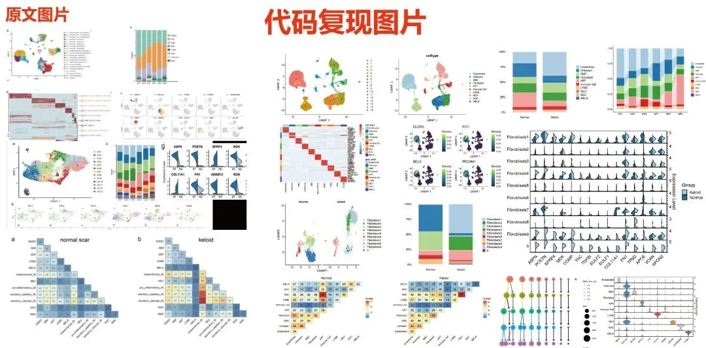
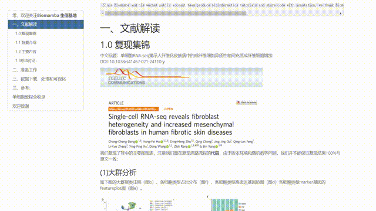
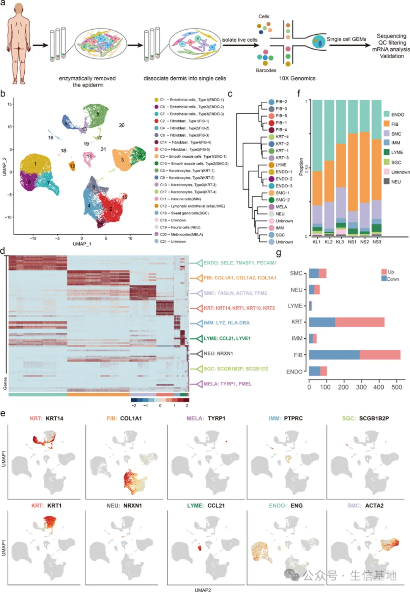
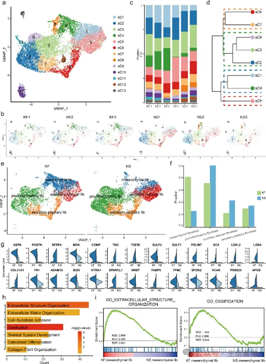
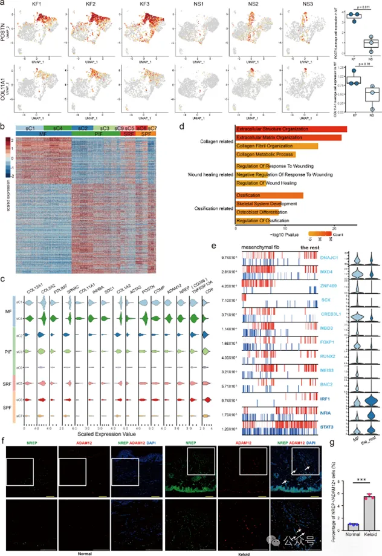
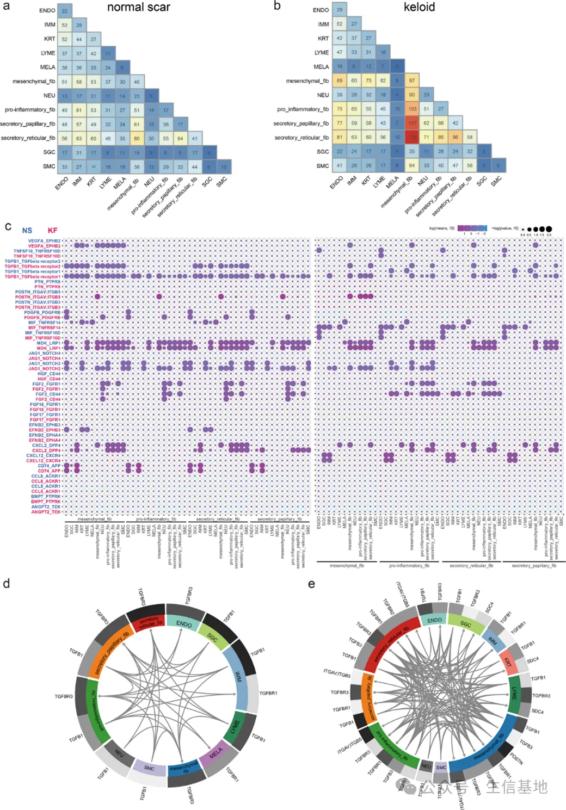
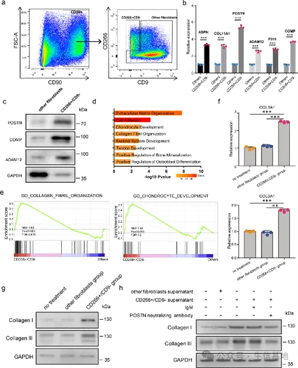
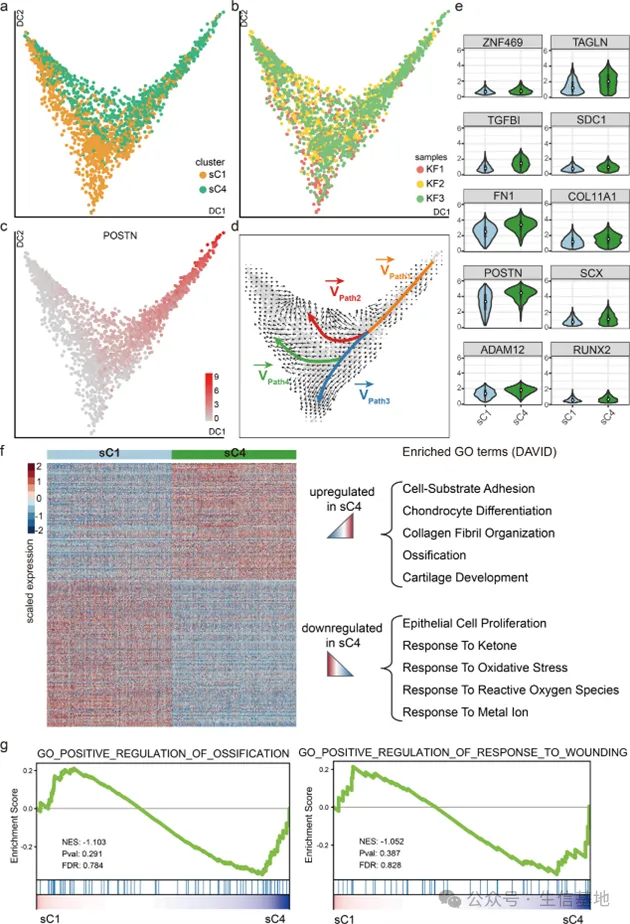
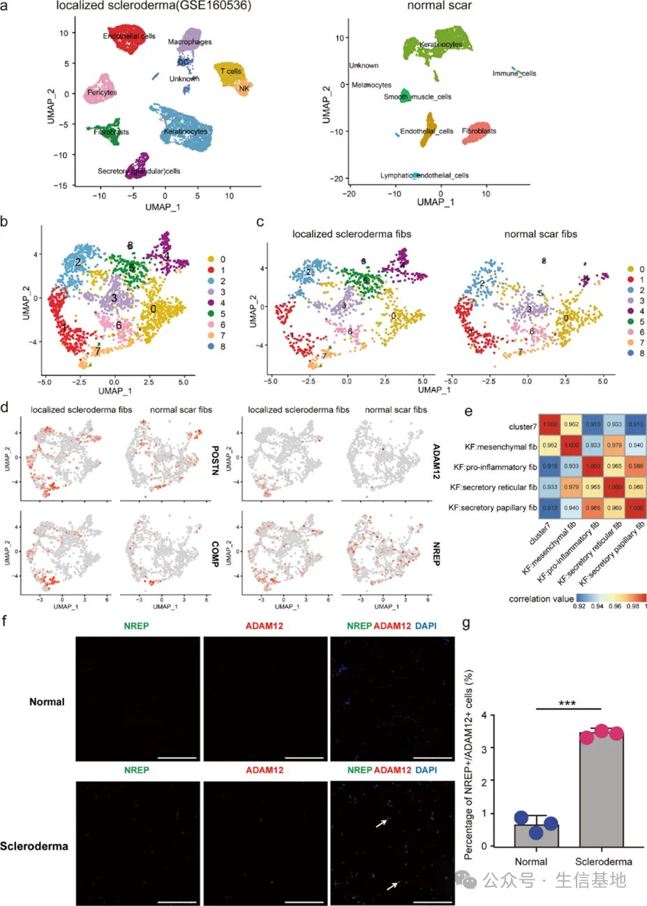

scRNA-seq揭示人纤维化皮肤病中的成纤维细胞异质性和间充质成纤维细胞增加
原文：https://mp.weixin.qq.com/s?__biz=MzAwMzIzOTk5OQ==&mid=2247526977&idx=1&sn=9cd57b202bd8b9b973961e2d288eaea3&chksm=9b3c1311ac4b9a073a28e627def4f2c721a307fdc0b8ac9e61c6839288ea3c4a8362dd7ff17b#rd 合集：单细胞教程全收录 / 文献速递
一、写在前面
本次将解析题为"Single-cell RNA-seq reveals fibroblast heterogeneity and increased mesenchymal fibroblasts in human fibrotic skin diseases"的文章(10.1038/s41467-021-24110-y)。纤维化是一种以成纤维细胞增殖和细胞外基质（ECM）过度积累为特征的病理过程，它可影响任何器官，导致组织瘢痕形成和器官功能障碍。最近，新的证据表明成纤维细胞实际上是形态和功能异质的细胞群体，但其异质性还没有很好的证实。这篇文章中，作者通过使用scRNA-seq 探索了皮肤瘢痕中的成纤维细胞异质性，发现瘢痕中成纤维细胞可以被分为4个亚群, 分泌状、分泌网状、间充质和促炎性。这些发现有助于我们更深入地理解纤维化皮肤疾病的病理，并为纤维化治疗提供潜在的靶点。除了解析外，我们还对此文进行了代码复写(大家可以参照这篇获取：那就开放一个终身订阅吧~)，教程可见：《NC》代码复现| scRNA-seq揭示人纤维化皮肤病中的成纤维细胞异质性和间充质成纤维细胞增加
本教程复现集锦：

复现手册展示：
这里也预祝我们的粉丝们早日命中心仪的期刊，若是大家觉得我平时分享的代码或生信教程有那么点 好用，可以在文章里以这种格式致谢Biomamba*
Since Biomamba and his wechat public account team produce bioinformatics tutorials elaborately and share code with annotation, we thank Biomamba for their guidance in bioinformatics and data analysis for the current study.
如果需要数据分析指导 、生信热点全文复现 、自测数据个性化分析 辅导，欢迎联系客服微信[Biomamba_yunying]
二、主要内容
(1)scRNA-seq揭示正常瘢痕和纤维性皮肤病真皮组织的细胞异质
。这篇文章中作者经scRNA-seq聚焦于瘢痕样纤维化皮肤疾病的真皮组织，并将其与正常瘢痕真皮组织进行比较（Fig.1a）。首先UMAP聚类分析展示了21个细胞簇（Fig.1b），这些细胞簇通过系统发育聚类树进一步分类，作者共鉴定出了5个成纤维细胞簇和3个内皮细胞簇（Fig.1c）。在此基础上，经特异性标记基因进行细胞谱系的鉴定，其中成纤维细胞谱系由 COL1A1 鉴定，内皮谱系由 ENG 鉴定（Fig.1d-e），对于细胞的比例进行进一步分析，结果显示相比于正常瘢痕组织，瘢痕疙瘩组织中观察到内皮细胞和平滑肌细胞比例增加，与其中血管生成增加的结果一致，且成纤维细胞的比例减少 (Fig. 1f–g)。以上结果揭示了成纤维细胞在纤维化过程中发生了显著变化。
Fig.1

(2)瘢痕疙瘩和正常瘢痕中成纤维细胞形成不同的细胞亚群
因成纤维细胞对于纤维化疾病进展非常重要，因此作者对其进行了重点关注，分析结果展示了13个亚型的成纤维细胞簇(Fig. 2a)及不同亚型在疾病发展过程中的变化 ，其中sC4的比例持续增加(Fig. 2b-c)。同时，作者经层次聚类分析发现，瘢痕疙瘩和正常瘢痕的成纤维细胞可以分为4个亚群 (Fig. 2d)。选择特异性标志基因对这些细胞簇进行鉴定，结果显示其中sC2、sC3 和 sC9 是促炎型成纤维细胞，sC6 和 sC7 是分泌状成纤维细胞，sC1 和 sC4 是间充质成纤维细胞，sC5 是分泌网状成纤维细胞(Fig. 2e)。成纤维细胞的功能还与特定胶原蛋白的表达有关。因此，作者还分析了四个成纤维细胞亚群的胶原蛋白表达水平。分析结果显示，与正常瘢痕相比，瘢痕疙瘩中分泌状、分泌性网状和促炎型成纤维细胞的比例减少，而间充质亚群的比例增加（Fig. 2f），且COL11A1、COMP和POSTN等基因在间充质成纤维细胞中的表达显著增加（Fig. 2g）。进一步对这些细胞簇中的差异基因进行GO和GSEA分析，结果显示骨骼系统发育、骨化和成骨细胞相关的信号通路在疾病中显著富集（Fig. 2h-i）。以上结果提示了间充质成纤维细胞在疾病发展中的重要性。
Fig.2

(3) 纤维化皮肤病中间充质成纤维细胞特征的鉴定
在上述发现的基础上，作者进一步关注了间充质成纤维细胞，首先发现相比于其他细胞亚群，POSTN和COL11A1等与骨骼系统发育、骨化和成骨细胞分化相关的基因，在间充质亚群中显著富集（Fig. 3a）。Heatmap展示了间充质亚群与其他亚群之间的显著差异基因（Fig. 3b），包括升高的POSTN、COMP、COL11A1、COL12A1和COL5A2在内的一些分泌蛋白和降低的SDC1、ADAM12和CD266等膜蛋白（Fig. 3c）。GO和GSEA分析表明，间充质亚群中上调的基因与胶原组织过程、伤口愈合、骨骼系统发育、成骨细胞分化等有关（Fig. 3d）。进而对细胞中的转录因子（TFs）进行分析，结果发现与骨生成、软骨生成以及韧带和肌腱分化相关的TFs，如SCX、CREB3L1和RUNX2，在间充质成纤维细胞亚群中富集，与其细胞表型一致（Fig. 3e）。为验证 scRNA-seq的分析结果，作者经免疫荧光（IF）检测发现，相比与正常组织，瘢痕中间充质成纤维细胞的标志物ADAM12和NREP明显增加（Fig. 3f-g）。
Fig.3

(4) 成纤维细胞亚群中的配体-受体相互作用分析
为了确定成纤维细胞亚群与其他细胞之间的细胞间通讯，作者经CellPhoneDB 2.0进行分析，结果显示正常瘢痕中，分泌网状成纤维细胞和其他细胞之间的相互作用最丰富，但在瘢痕疙瘩中，间充质成纤维细胞和其他细胞之间的相互作用最丰富（Fig.4a-b），且相比于正常组织，瘢痕组织中发生增加的信号包括TGF-β1和VEGF等纤维化促进信号传导（Fig.4c），发生减少的信号包括FGF2配体-受体相互作用等纤维化抑制信号（Fig.4d）。
Fig.4

(5) 间充质成纤维细胞通过POSTN促进瘢痕中胶原蛋白表达
为了探索间充质成纤维细胞在纤维化中的特征和功能，作者利用所有成纤维细胞都表达 CD90标志物的特征对其进行分选，在成纤维细胞又通过CD266阳性和CD9阴性筛选出间充质成纤维细胞（Fig.5a），同时经RT-qPCR和WB对分选的细胞进行了验证（Fig.5b-c）。之后，作者在此细胞中进行了RNA-seq分析，GO和GSEA分析显示，CD266+/CD9−成纤维细胞中上调的基因与细胞外基质组织、胶原原纤维组织、骨骼系统发育、软骨细胞发育等相关（Fig.5d-e）。编码骨膜蛋白的POSTN在瘢痕形成中起重要作用，并能够增加瘢痕中的胶原蛋白表达，而胶原蛋白表达增加是皮肤纤维化的一个重要特征。接下来，作者想要探究POSTN是否在其中发挥作用，首先经CD266+/CD9−细胞的上清液来与其他成纤维细胞进行共孵，结果显示，CD266+/CD9−处理组细胞的I型和III型胶原表达更高，提示间充质成纤维细胞能够促进其他成纤维细胞的胶原合成（Fig.5f-g）。在此基础上，作者添加了POSTN的中和抗体OC-20进行相互作用，其能够阻断POSTN与整合素的相互作用。结果显示，OC-20显著抑制了CD266+/CD9−上清液处理的成纤维细胞中I型和III型胶原的增加表达，表明间充质成纤维细胞通过POSTN促进了瘢痕疙瘩中其他成纤维细胞的胶原合成（Fig.5h）。
Fig.5

(6) sC4 成纤维细胞比 sC1 成纤维细胞更像间充质细胞
间充质成纤维细胞亚群包括 sC1 和 sC4 亚群，为进一步探究间充质成纤维细胞亚群的关系，作者进行了diffusion-pseudotime (DPT) 分析（Fig.6a-b），其中sC1细胞主要占据轨迹的下部分，而sC4细胞主要占据上部分。进一步对于间充质细胞的标志基因进行检测，POSTN和COL11A1主要富集在轨迹的上部分（Fig.6c）。RNA速率分析是一种预测细胞状态转变方向和速度的方法，能够得出剪接和未剪接的mRNA计数，作者发现Path1代表成纤维细胞的初始状态，之后分为两个分支，sC4成纤维细胞主要位于“pre-branch”和Path2的，而sC1成纤维细胞主要位于Path3和4分支（Fig.6d）。与此同时，作者关注了两个亚群中的差异表达基因，结果显示与间充质前体相关的基因，如POSTN、ADAM12和COL11A1，在sC4成纤维细胞中的表达高于sC1成纤维细胞。GO和GSEA分析也表明，与sC1成纤维细胞相比，sC4成纤维细胞在细胞外基质组织、骨化、软骨细胞发育存在更多富集（Fig.6e-g）。以上结果提示， sC4 成纤维细胞更像间充质纤维细胞，在疾病发展过程中发挥重要的作用
Fig.6

(7) 间充质成纤维细胞在硬皮病中增加
接下来，为验证发现的一致性，作者将瘢痕中的间充质成纤维细胞亚群sC4与另一种纤维化皮肤疾病——硬皮病（scleroderma）中的成纤维细胞进行了比较，结果显示相比于正常瘢痕，硬皮病中第7亚群的成纤维细胞数量有所增加（Fig.7a-c）;且此亚群中间充质成纤维细胞标记基因POSTN、ADAM12、COMP和NREP表达也明显升高（Fig.7d）。相关性分析也证实硬皮病第7亚群成纤维细胞与瘢痕疙瘩中间充质成纤维细胞最为相似（Fig.7e）。免疫荧光染色结果显示，硬皮病组织中 ADAM12/NREP 细胞的比例高于正常对照组织。以上结果表明间充质成纤维细胞数量的增加可能是纤维化皮肤疾病的普遍机制。
Fig.7

三、总结讨论
总而言之，这篇文章作者通过使用scRNA-seq技术，探索纤维化皮肤病范例瘢痕中的成纤维细胞异质性，同时在硬皮病中也观察到了间充质成纤维细胞亚群的增加，表明间充质成纤维细胞的增加可能是皮肤纤维化的一个普遍机制，这些发现将有助于深入理解皮肤纤维化的病理机制，并开发纤维化疾病治疗的潜在靶点。

如何联系我们

 公众号后台消息回复不便，这里给大家留一下领取资料及免费服务器(足够支持你完成硕博生涯的生信环境)的微信号 ，方便各位随时交流（别问在么，添加时直接说来意）。呼声很高的交流群 也建好了，欢迎大家入群讨论：
公众号后台消息回复不便，这里给大家留一下领取资料及免费服务器(足够支持你完成硕博生涯的生信环境)的微信号 ，方便各位随时交流（别问在么，添加时直接说来意）。呼声很高的交流群 也建好了，欢迎大家入群讨论：
大家可以阅读完这几篇之后添加给生信入门初学者的小贴士 如何搜索公众号过往发布内容
已有生信基地联系方式的同学无需重复添加

 您点的每个赞和在看，我都认真当成了喜欢
您点的每个赞和在看，我都认真当成了喜欢